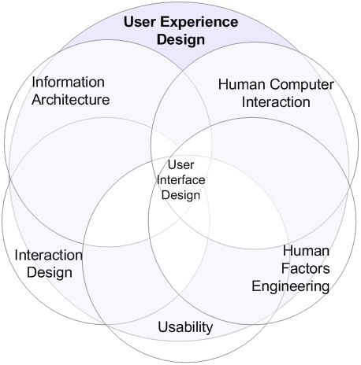
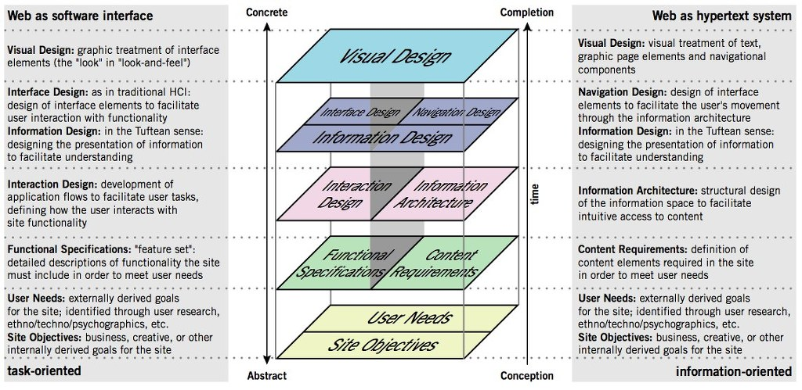
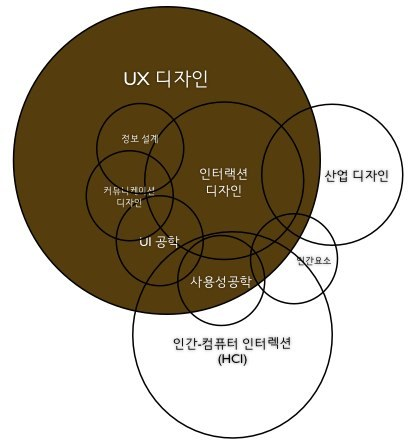
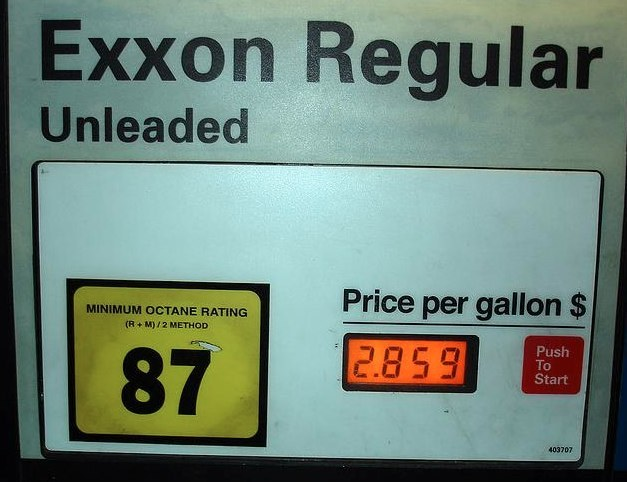
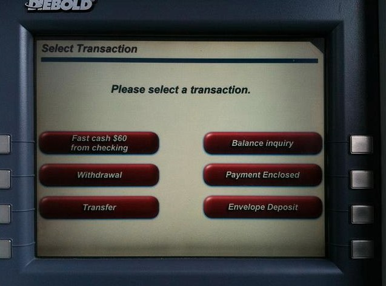
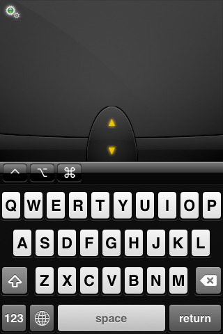
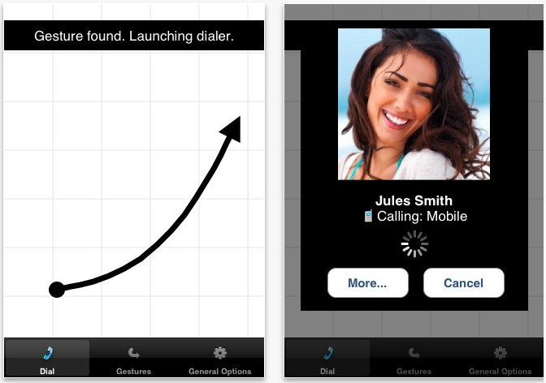
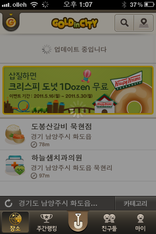

모바일(웹/앱)에서의 UX
요즘 모바일 기획을 어떻게 해느냐고 물어보는 친구들이 많다.
트랜드를 반영하듯이 모든 프로젝트에 모바일(웹/앱) 제작이 모두 들어있어 어떻게 하면 잘 만들었다는 소릴 들을까 고민을 많이 하는듯 하다.
솔찍히 나조차도 기획 보다 관리의 역할을 많이 해오던 사람이라 그들에게 뭐라 가르칠 정도의 위인은 안된다. 다만 도움이 되었으면 하는 맘에서 디바이스에 대한 기능을 아는것이 더 중요하다고 얘길 해준다.
(흔히 화면의 제약성과 이동성에 대한 포커스를 잡고 진행하는것이 앱기획의 포인트라고 하는데 이런것은 기본임을 생각했을때 도움이 될만한 얘기를 한것이다.)
스마트폰에서 사용되는 어플리케이션들(이하 앱)을 보면 그만한 밴치마킹도 없다.
나보다 뛰어난 기획자가 만들어놓은 기획물들을 무료로 다운 받아서 배울 수 있으니 이런 직접적인 배움도 없을것이다.
그동안 내가 보아온 앱에서의 UX적인 기획들을 생각해보았다.
UX란 무엇인가?
사용자 경험(使用者經驗, User Experience 유저 익스피리언스, 간단히 UX)은 사용자가 어떤 시스템, 제품, 서비스를 직, 간접적으로 이용하면서 느끼고 생각하게 되는 총체적 경험을 말한다.
단순히 기능이나 절차상의 만족뿐 아니라 전반적인 지각 가능한 모든 면에서 사용자가 참여, 사용, 관찰하고 상호 교감을 통해서 알 수 있는 가치있는 경험이다.
긍정적인 사용자 경험의 창출은 산업 디자인, 소프트웨어 공학, 마케팅, 및 경영학의 중요 과제이며 이는 사용자의 니즈의 만족, 브랜드의 충성도 향상, 시장에서의 성공을 가져다 줄 수 있는 주요 사항이다.
부정적인 사용자 경험은 사용자가 원하는 목적을 이루지 못할 때나 목적을 이루더라도 감정적, 이성적으로나 경제적으로 편리하지 못하거나 부정적인 반응을 불러일으키는 경험을 하게 되는 경우 발생할 수 있다.


그림 1.1의 관계도를 보면 다양한 분야에서의 공통분모인 UX를 볼 수 있으며 Web에서의 UX 요소들은 그림 1.2에서 확인할 수 있다.
UX는 어떤 분야 인가?
UX 디자인 분야은 다양한 분야의 범위에 속하는 광범위한 분야를 가지고 있다.
그림 2.1은 UX디자인과 겹치는 분야들을 도표화 한것이다.

UX는 누가 해야 하는가?
몇년전부터 UX디자이너라는 직업이 생기고 디자이너들이 UX에 대해서 기획하고 공부 하는것 같다.
그 만큼 UX에 대한 위상이 높아졌음을 느낄 수 있는데 그러면 UX는 디자이너만 진행해야 하는 작업인가?
결론만 말한다면 그렇지 않다
물론 디자이너가 UX의 마지막을 지휘하는것이 옳다고 본다.
UX디자인은 사용자의 시각으로 인식되는 경험을 바탕으로한 디자인이기 때문이다.
시각적인 디자인이 무엇보다 중요한것이 사실이며, 디자이너가 마무리를 해야 잘된 결과물을 얻을 수 있는것도 사실이다.
그렇지만 디자인 만으로 UX 바라 본다는것은 결과가 부족해질 뿐이다.
기획적인 안목이 필요 함으로 디자이너와 기획자는 50/50의 진행이 좋지 않을까 싶다.
웹이나 모바일이나 UX의 중요성은 당연하지만 제약적인 부분이 더 큰 모바일이 더 UX에 대한 기획력이 돋보여야 한다고 본다.
중요한것은 디자이너에게 맞겨놓고 손 터는 기획자가 없어야 하고 디자이너도 기획자와 상의 하여 반영하는 상호 협력이 필요하다는것이다.
상호 협력이 없을때 어떤 상황이 발생하는지 아래의 그림 3.1과 그림 3.2에서 극명하게 나타난다.

87를 많이 눌렀던 표시가 나타난다. 오른쪽에 Puch to Start를 눌러야 하는데.. 누가 알겠는가?
분명한것은 디자인만으로 중요도를 판단하지 말라는것이다. 중요도에 따른 생각은 사용자에게서 나와야 하는것...

웹이서도 이런경우가 많다. 버튼 디자인을 사용함으로써 사용자의 혼동을 준다.
디자인만 생각하는 더러운 현급지급기...
모바일 앱에서 볼 수 있는 UX
디바이스의 기능들을 습득한다면 어플의 UX도 간단하게 해결 되는것 같다.
그림 4.1는 Mobile Mouse FREE (Remote/Trackpad) 어플로 같은 네트워크에서 마우스, 키보드, 트렉패드 같은 역할을 하는 어플이다.
이 어플에서의 UX는 키판을 올리고 내리는데 마우스의 액션이 아닌 iPhone을 아래로 내리면 키판이 내려 가고 올리면 키판이 올라가는 기능적인 사용성을 높였다.

그림 4.2의 어플은 Gesture Dial로 손가락의 시그니쳐를 이용한 전화방법이다.
사용자가 급하게 전화를 해야할 경우 기억해놓은 간단한 손가락의 동작으로 전화를 걸 수 있는 장점이 있다. 이또한 UX에 대한 기획안이 될듯 하다.

그림 4.3은 GoldinCity (LBSNS)의 예시로 아이폰에서 많이 사용하는 리스트업데이트 기능이다.
목록에 드레그 하면 업데이트가 되는기능으로 요즘 많이 사용한다.

관련 자료
- UX Week 2009 | Jesse James Garrett | The State Of User Experience (출처 : vimeo.com)
- 생활속의UX (출처 : 이성진님의 모바일로 만드는 블로그)
- UX와 관련된 다이어그램 모음 (출처 : 구르지 않는 돌)
- Designing Mobile Experiences (출처 : slideshare.net)
마지막으로
UX를 잘하려면 다음의 두가지만 기억하자.
첫번째 역지사지의 자세로 돌아가라.
사용자는 바보다 아무것도 모른다.. 그랬을때 내가 해야할 일을 생각하고 실행에 옮겨라 그러면 성공한 UX 디자인이 될것이다.
두번째 환경의 분석을 확실하게 해야 한다.
아이폰에 올린 앱이라면 사용성이전에 아이폰 디바이스에 대한 분석이 필요하다. 화면의 사이즈에서 부터 컨트롤로에 대한 분석 그리고 디바이스에 대한 사용성을 꼭 명시하고 디자인해야 한다.